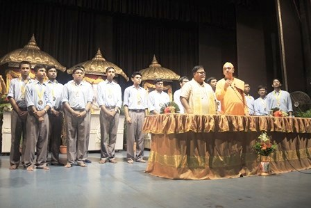

Truly speaking, I can be a cricketer, a footballer as well a swimmer. I love acting. But above all I am a hard-working fellow who believes "It is not the fate
rather the hard work which makes a man successful".
In every step of my life I only follow Swami Vivekananda, The cyclonic monk.

In future I want to do something different from the common people. I mean, I do not want to lead a common life, rather a adventurous life, a life full of threat
but free and enjoyable attracts me most. I want to do something so that people remember me even after my death.
I want to lead my life in the way of honesty, integrity and hard work.